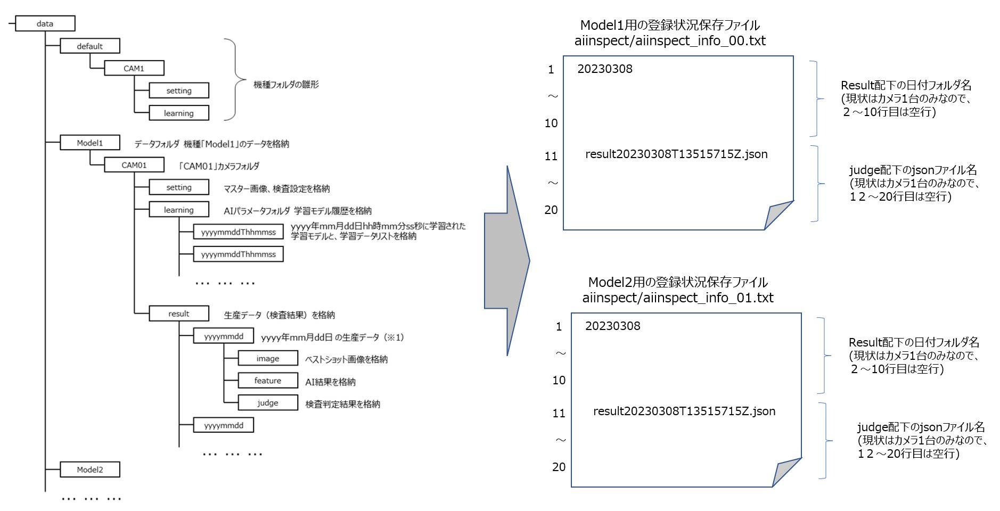

SALTYSTER SpeeDBee Hive連携
関連商品 紹介：

[品番、バージョン]
|
| レンズトライアルキット : |
MK-DVLTRNP01, |
2.00 |
| AI検査アプリケーション : |
MS-EXFANS01A, |
1.00 |
| AI検査マネジメントソフトウェア : |
-, |
1.00 |
| SpeeDBeeHive : |
-, |
v3.16.2試用版(Windows) |
|
AI検査アプリケーション/AI検査マネジメントソフトウェア、SpeeDBee Hiveのインストール・セットアップを、それぞれのマニュアルを参照の上実施してください。
それぞれのシステムが単独で動作するようになっている前提で、以降の説明は記載されています。
AI検査マネジメントソフトの動作環境はRaspberry Pi OSの64bitのみですが、SpeeDB HiveではサポートされていないOSとなりますので、検査結果を別PCから参照できるようにする必要があります。
ここでは、sambaでフォルダ共有をおこないます。
(1) Sambaのインストール
Sambaがインストールされていない場合は、以下コマンドでインストールをおこないます。
$ sudo apt install samba samba-common-bin
(2) Sambaの設定ファイルの編集
Sambaの設定ファイルを編集して、共有フォルダの設定を追加します。設定ファイルは通常/etc/samba/smb.confにあります。
$ sudo vi /etc/samba/smb.conf
以下の内容をファイルの最後に追加します。共有フォルダの名前、パス、アクセス権限を自分の環境に合わせて変更してください。
[Shared]
path = /media/pi/DATA_DRIVE
read only = yes
browsable = yes
public = yes
guest ok = yes
create mask = 0555
directory mask = 0555
* この例では、/media/pi/DATA_DRIVE/data がAI検査マネジメントソフトのデータ出力先になっています。
(3) Sambaの再起動
設定を反映するためにSambaを再起動します。
$ sudo systemctl restart smbd
(4) ファイアウォールの設定（必要に応じて）
OSのファイアウォールを使用している場合は、Sambaのポートを許可する必要があります。
$ sudo ufw allow samba
(5) 共有フォルダの割り当て
SpeeDB Hiveはサービスとして実行される為に、ドライブの割り当てをしてもそのドライブを参照できません。
そのため、共有フォルダはWindowsのシンボリックリンクの機能を使用して参照します。
以下は、AI検査マネジメントソフトが動作するRaspberry PiのIPアドレスが 192.168.0.20 の場合のコマンドです。
シンボリックリンク先は、環境に合わせて適宜変更してください。
C:\Users\XXXX> mklink /D C:\aiinspect_shared \\192.168.0.20\Shared
SpeeDBee Hiveには、データの収集を行うモジュールをユーザーが独自作成・システムに追加できる「カスタムコレクタ」という仕組みがあります。
カスタムコレクタはC言語/Pythonで作成可能ですが、今回はjsonファイルの読み込み等ライブラリがそろっていて手軽にプログラミングが出来るPythonを使用します。
(1) プログラムの引数
検査結果の参照先フォルダ、DB登録状況保存先フォルダ（後述）の場所をプログラムの引数で渡すようにします。
ただしカスタムコレクタへの引数は1つだけ指定可能なので、半角のスペース区切りで連結したものを指定します。
# 引数
dirs = param.split(" ")
self.rootPath = dirs[0]
self.infoPath = dirs[1]
(2) データベースの定義
検査結果として登録するデータを、カメラ名・検査日時・機種名・総合結果・検査ポイントごとの検査結果、の5つとします。
項目は、全て文字列で定義します。
-
カメラ名 : フォルダ名をそのまま使用します。(cam)
-
検査日時 : jsonファイルのcamDateをそのまま使用します。(date) UTC->ローカル時間への変換はおこないません。
-
機種名 : フォルダ名をそのまま使用します。(lot)
-
総合結果 : jsonファイルのoverallResultの値を使用します。(overallresult) OKを0, NGを1に変換します。
-
検査ポイント毎の検査結果 : jsonファイルのjudgeの値を使用します。(result) OKを0, NGを1に変換します。出てくる順番に文字列を連結して1つの項目に登録します。(例: 0010)
# DB定義
# カメラ名
self.clm0 = self.makeOutputColumn("cam", HiveColumn.TypeString)
# 検査日付
self.clm1 = self.makeOutputColumn("date", HiveColumn.TypeString)
# ロット番号
self.clm2 = self.makeOutputColumn("lot", HiveColumn.TypeString)
# 総合判定
self.clm3 = self.makeOutputColumn("overallresult", HiveColumn.TypeString)
# エリア毎の判定結果
self.clm4 = self.makeOutputColumn("result", HiveColumn.TypeString)
(3) 連携のタイミング
カスタムコレクタをタイマーで定期的に起動し、検査結果が格納されるフォルダをチェックするようにします。
タイマーの起動間隔は変数で定義し、デフォルトは10秒としています。
# データチェック間隔(秒)
_intervalSec = 10
～
##########
# メイン処理
#
# Note:
# 定期タイマー起動
##########
def mainloop(self):
# 設定した秒数毎にタイマーを起動する
self.intervalCall(int(_intervalSec * 1000 * 1000), self.proc)
(3) DB登録状況の保存
同じ検査結果を2重でDBに登録しないように、登録状況をファイルに保存しておきます。
-
引数の2番目に指定されたDB登録状況保存先フォルダに、aiinspectというフォルダを作成します。
-
フォルダ内に、機種ごとに登録状況を保存するファイルを作成します。ファイル名は、aiinspect_info_XX.txtとします(XX : 00 - の連番)
-
DBへの登録は、登録する順番が都度同じになるように、フォルダ名・ファイル名を昇順でソートしてから実施します。
-
ファイルには、各カメラ毎に度どの日付フォルダのどのjsonファイルの内容までを登録したのかを出力します。
-
ファイルの最初のn行(n : カメラ数。AI検査マネジメントソフトウェアで扱えるカメラ数は1ですが、将来的な拡張を考慮してn=10で実装しています)は最後に処理した日付フォルダ名、
それ以降は最後に処理したjsonファイル名を出力します。
-
未処理の状態（初期状態）は、空行です。
-
DBへの登録時は、上記ファイルを読み込んで、登録済みののものはスキップするようにします。また、DBに登録したらファイルの内容を更新します。
-
機種やカメラを追加して昇順結果の順番が変わった時は、ファイルの内容を手動で更新するか、ファイルを削除して最初から登録することが必要となります。
ファイルの構造イメージは、以下になります。

(4) DBへのデータ登録方法
複数の項目を同じデータグループとして登録するには、insert()の引数に同じタイムスタンプを指定する必要があります。
# DBに生成したデータを登録
nowTime = self.getTimestamp()
self.clm0.insert(camDir, nowTime)
self.clm1.insert(jsonH["camDate"]["DATE"], nowTime)
self.clm2.insert(modelDir, nowTime)
self.clm3.insert(overallresult, nowTime)
self.clm4.insert(result, nowTime)
詳細は、SpeeDB Hiveのユーザーガイド、Pythonカスタムコレクタの章を参照してください。
カスタムコレクタをSpeeDB Hiveに登録し、連携用の設定をおこないます。
サンプルプログラムを ipro_aiinspect/saltyster/ipro_aiinspect.py として公開しています。
(1) サービスの再起動
SpeeDB Hiveの評価版は連続稼働が1時間という制限事項がありますので、動作確認前に再起動を実施しておきます。
Windowsの場合は、Windowsメニューの「Windows管理ツール - サービス」でspeedbhiveを再起動します。
(2) カスタムコレクタの登録
SpeeDB Hiveの管理画面「システム - コレクタ関連設定 - カスタム(Python)」からサンプルプログラムを登録します。
追加ボタンでファイルを指定して登録すると、カスタムコレクタの一覧に表示されます。
(3) カスタムコレクタの設定
SpeeDB Hiveの管理画面「コレクタ - カスタム」からサンプルプログラムの設定を登録します。＋ボタンを押下すると、設定画面が表示されます。
設定が完了したら、保存ボタンを押下します。
-
カスタム名 : 任意の名前を入力します。
-
タイプ : python を選択します。
-
ライブラリ : (1)で登録したサンプルプログラムを選択します。
-
パラメータ : スペース区切りで、2つの値を設定します。
1つめ : 「4. 検査結果データの共有」でマウントしたデータフォルダのパス名を入力します。
2つめ : 「5. SpeeDB Hiveへのデータ取り込み - (3) DB登録状況の保存」で説明した、登録状況を保存するファイルの出力先フォルダのパス名を入力します。
保存完了後、初期化ボタンを押下してDBのカラム一覧が表示されたら設定は完了です。
実際にカスタムコレクタを動作せて、検査結果がDBに登録できるかを確認します。
(1) サービスの再起動
SpeeDB Hiveの評価版は連続稼働が1時間という制限事項がありますので、動作確認前に再起動を実施しておきます。
Windowsの場合は、Windowsメニューの「Windows管理ツール - サービス」でspeedbhiveを再起動します。
(2) データ分布モニターの表示
SpeeDB Hiveの管理画面「システム - データ分布モニタ」を選択します。
コレクタのリストで登録したサンプルプログラムを選択し、適用ボタンを押下します。
(3) 検査の実施
AI検査マネジメントソフトウェアで、検査を実行します。

検査が完了してしばらくして、データ分布モニター上に登録されたデータが●で表示されたら動作確認完了です。
本ページの情報は、特記無い限り下記ライセンスで提供されます。
Copyright 2023 i-PRO Co., Ltd.
Licensed under the Apache License, Version
2.0 (the "License");
you may not use this file except in compliance with
the License.
You may obtain a copy of the License at
http://www.apache.org/licenses/LICENSE-2.0
Unless required by
applicable law or agreed to in writing, software
distributed under the
License is distributed on an "AS IS" BASIS,
WITHOUT WARRANTIES OR
CONDITIONS OF ANY KIND, either express or implied.
See the License for
the specific language governing permissions and
limitations under the
License.
i-PRO - Programming Items トップページ
プライバシーポリシー